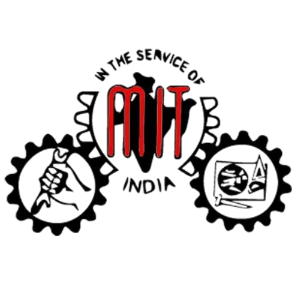

This certificate is awarded in recognition of the outstanding technical contributions of {Name} (Roll No: {Roll_Number}), working with team {Team_ID}, towards the development and virtualization of Measurements & Metrology Laboratory experiment: